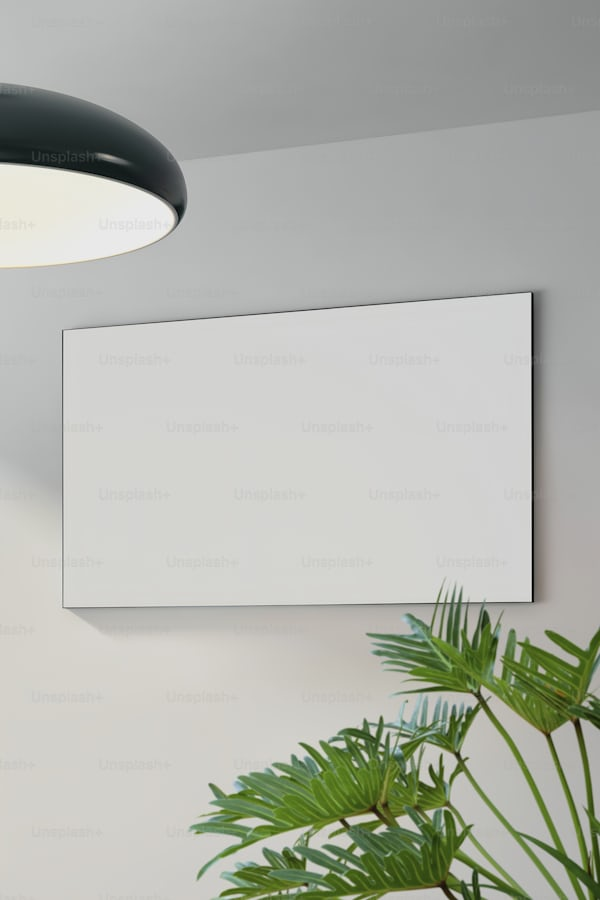

our Certificate & Online Programs
Muna bada certificate akan kowani course kafin karbar certificate dolene dalibi ya rubuta final Exam kafin rubuta exam sai dalibi ya sami 70% attendence mark tare answer assignment da quizs, sannan bamu ba dalibin da yake da fail results certificate.
Muna koyarwa ne live sessions akan kowani course sannan muna lessons ukku a kowani sati , kowani dalibi yana bukatar reading materials kamar su Computer ko smartphone, biro, books , internet connection wasu courses din da bukatar drawing materials.
Muna da kwararrun Malamai masu hazaka sannan masu iya mula'amala da fasahohin zamani domin koyar ta online.
Lists of the Courses
English
2
Arabic
3
Qur'an
1
Hadisi
2
Web Development
3
Artificial Intelligence
2
Android Apps Development
3
Graphics Design
3
C Programming
3
C++ Programming
3
Python Programming
3
Leave a Comment